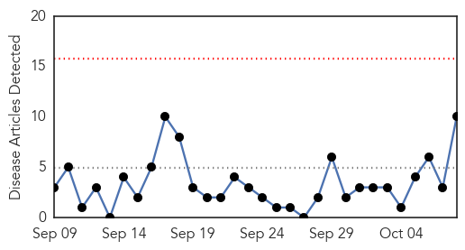

30 Day Trends
Web: 0 alerts, 0 warnings
Twitter: 0 alerts, 0 warnings
Top Articles:
- 0.976
- Cambodia confirms first measles case after elimination - Xinhua
- 0.930
- 1 in 8 U.S. Kids Not Protected Against Measles
- 0.911
- Measles outbreaks looming if vaccination rates don’t go up, researchers warn
- 0.854
- 9 Million US Kids at Risk for Measles
- 0.854
- Positive Measles Case Confirmed; Possible Exposure Locations...
- 0.835
- News Scan for Oct 08, 2015
- 0.781
- SCOTUS Refuses to Hear Mandatory Vaccine Case – Now Fourth Amendment at Stake in New York
- 0.592
- Fairfax County child comes down with measles
- 0.591
- Feature: Uganda launches nationwide immunization to battle its top killer disease --China Economic Net
- 0.552
- Top gov't scientists say no to vaccines for their kids
Top Tweets:
-
No tweets found for Oct 08, 2015
Web/News Articles
Tweets

Article Locations